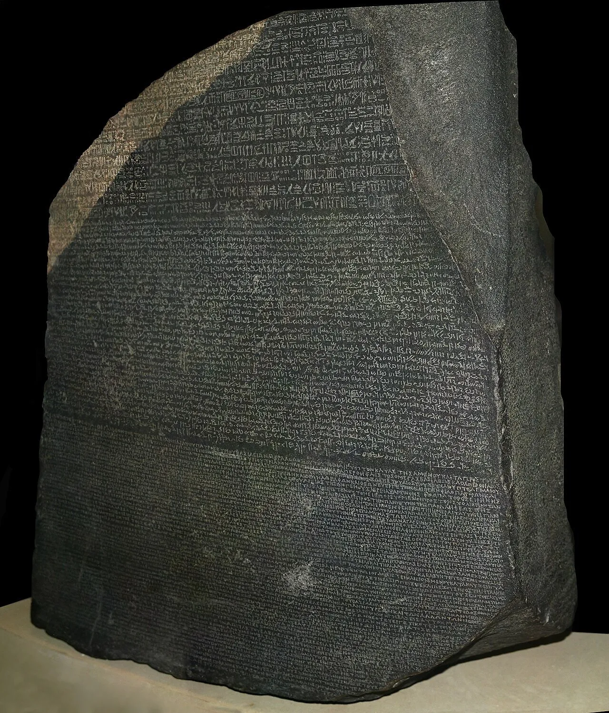

북해의 로제타

이중 언어 문헌은 고대어의 발음을 추정하는 데에 아주 유용한 도구입니다.
역사에 한 획을 그은 로제타석(상단 사진)도 그리스어가 병기되어 있었기에 결정적인 단서가 되었지요.
같은 방법으로, 고대 노르드어 문헌에서 고대 게일어를 어떻게 음역했는지를 보고 게일어의 옛 발음을 추정하기도 합니다.
예를 들어 게일어 “Dubthach”는 노르드어로 “Dufþakr”, “Tadg”는 “Taðkr”로 전사되어 있는데,
“-r”는 노르드어 남성 명사의 어미임을 고려하며 제외하면 이 전사를 통해서 현재는 [h] 내지는 묵음으로 소리나는 “th”, “d(h)”가 옛날에는 영어의 th와 비슷한 소리였으리라고 추측할 수 있습니다.
저 두 이름이 지금은 “두하흐”, “타이그”지만, 옛날에는 아마 “두브사흐”, “타드그” 정도였을 것으로 보입니다.
(Thurneysen, 1912)